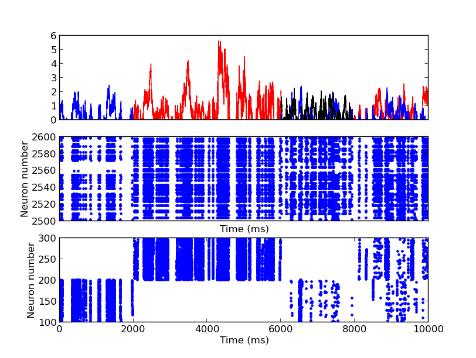

These are Brian scripts corresponding to the following paper: Brette R (2012). Computing with neural synchrony. PLoS Comp Biol. 8(6): e1002561. doi:10.1371/journal.pcbi.1002561 Files are organized by topic. There can be dependencies within folders, but not across folders. A few scripts need to be run in a specific order, but this is specified in the header of the files. Note that a few simulations are very long (mostly the STDP ones). More usage information: Installing Brian is easy on an ubuntu 12.04 LTS system if you have easy_install installed: just type sudo easy_install brian To run a sample script that just takes minutes try for example: cd computing_with_neural_synchrony/olfaction/ python Fig9B_olfaction.py After a few minutes you should see Fig9B from the paper: 